ARCHIVE
송파 오픈예정 식당 인더스트리얼 콘채 빈티지 벽체 시공
송파 지역 식당 오픈 준비 현장에서 이질재료 벽체를 올퍼티·다단계 콘채뿜칠로 인더스트리얼 빈티지 벽체로 완성한 사례. 자재·공구 목록과 9단계 공정을 상세 기록.

주요 하자 · 문제점
• 오래된 마감재와 사용 흔적이 남아 있는 벽체 (인더스트리얼 스타일 표현에는 유리한 조건으로 평가) • 이질감 있는 기둥 — 미장+페인트가 혼재된 상태 • 건축주는 노출콘크리트 특유의 질감과 빈티지한 인더스트리얼 분위기를 요청 • 노출콘크리트 특유의 질감과 시간의 흔적을 살려 거칠면서도 세련된 공간을 연출하는 것을 목표로 인더스트리얼 컨셉 설정 • 이질재료(미장+페인트) 부위는 전체 퍼티로 처리하기로 판단 — 진행하다 보니 "거의 올퍼티 수준"까지 확대됨 • 바탕면 정리 후 라이트그레이로 전체 뿜칠할지 여부는 현장 상황에 맞게 판단해야 한다는 원칙 언급
적용 공법
1. 현장미팅 — 제주에서 서울로 이동해 현장미팅 및 건축주 의도 파악 2. 자재·공구·연장 준비 — 프라이머, 콘채 미들그레이, 콘채 라이트그레이, 코팅제, 커버링, 마스킹, 콤프레샤, 고대와 고대판, 헤라, 전기선, 그라인더, 샌딩기 등 3. 바탕면 정리 — 청소, 튀어나온 못 제거, 들뜬 부위 스크래핑, 기본 그라인딩, 커버링 작업 4. 균열보수와 퍼티 — 이질재료 부분은 올퍼티, 단차·파손·오염 부위는 콘채퍼티 작업 5. 퍼티&콘채뿜칠 — 미들그레이 퍼티로 뼈대를 잡고 미들그레이 콘채 1차 뿜칠, 보수부위 단차부는 샌딩 (주방쪽은 타일 시공 예정이라 제외) 6. 샌딩 후 2차 부분퍼티와 샌딩 — 1차 시공 후 불편한 부분을 다시 샌딩·퍼티로 반복 보완 7. 2차 샌딩, 퍼티부분 커버 — 1차 뿜칠 후 눈에 띄는 불편한 면을 재차 샌딩·부분퍼티 (퍼티 후 반드시 샌딩 필요하다는 원칙 언급) 8. 2차·3차 콘채뿜칠 — 1·2차는 미들그레이로 전체 바탕 형성 후, 3차는 라이트그레이로 전체 뿜칠 (패턴 작업을 위해서는 라이트그레이가 적절하다는 판단) 9. 패턴과 채도를 낮추는 과정
시공 결과
• 인더스트리얼 컨셉의 빈티지 노출콘크리트 벽체로 완성 • 기존 이질감 있던 기둥(미장+페인트)이 콘채 시공을 통해 빈티지한 느낌으로 통일됨 • 원문 코멘트: "콘크리트는 차가운 재료처럼 보이지만, 그 안에는 시간과 공간의 이야기가 담겨 있습니다"
BEFORE시공 전
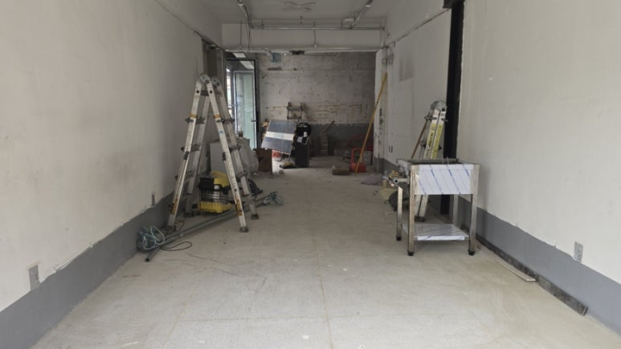
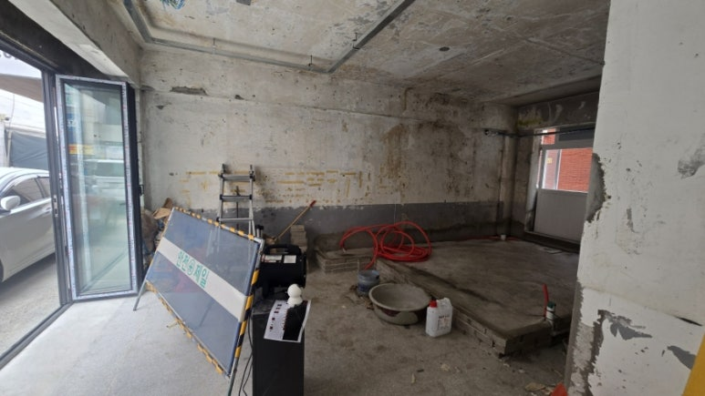
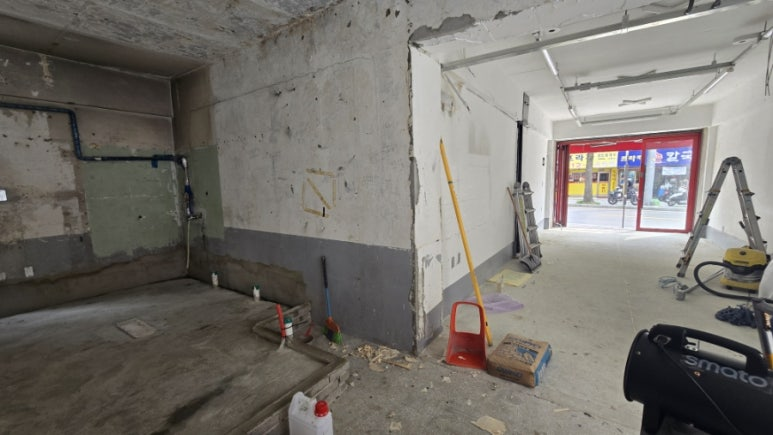
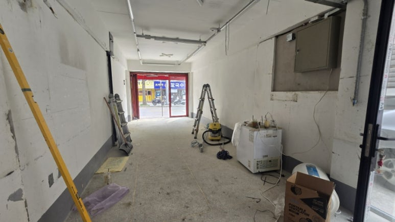
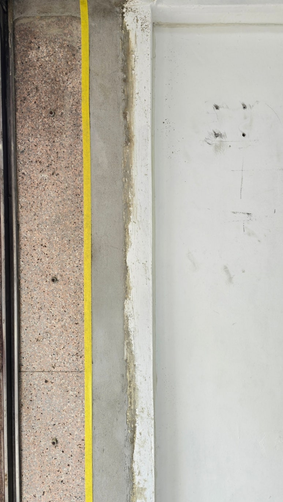
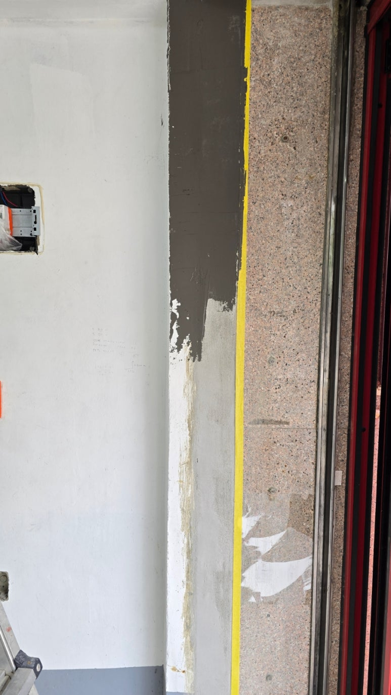
PROCESS시공 중
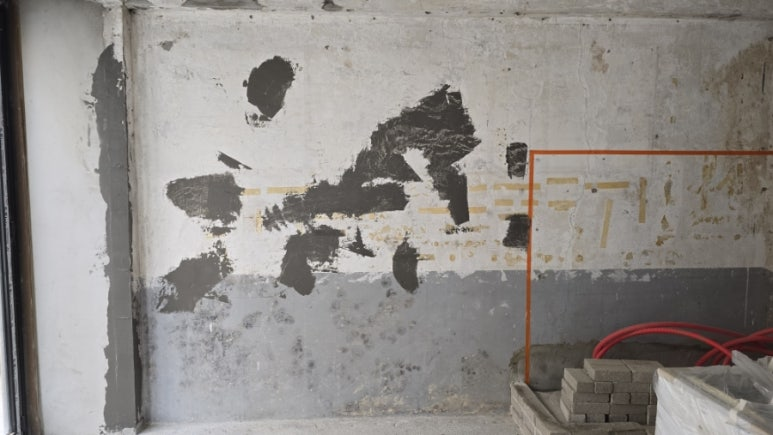
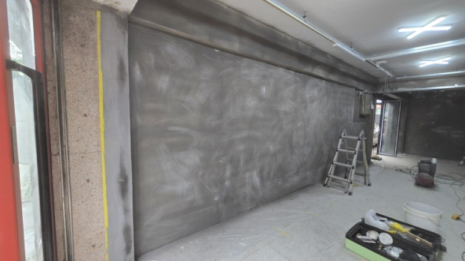
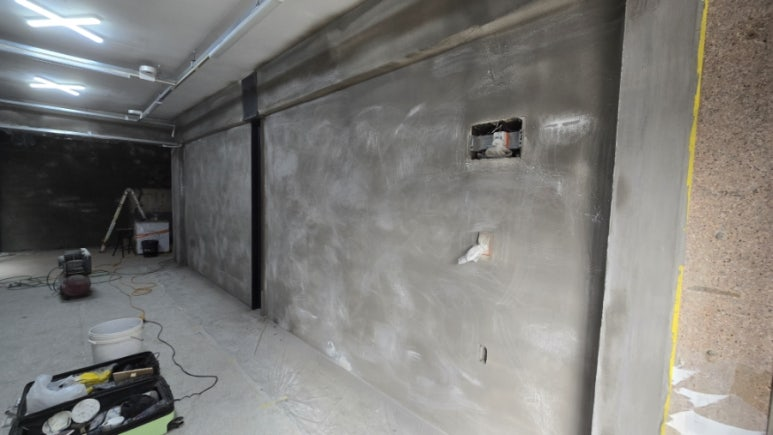
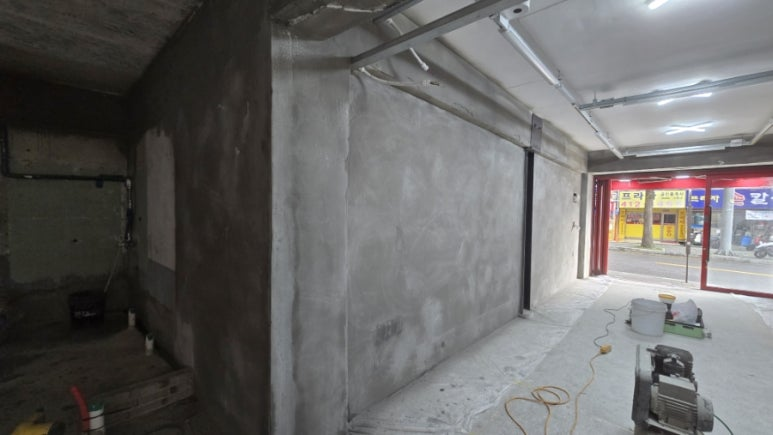
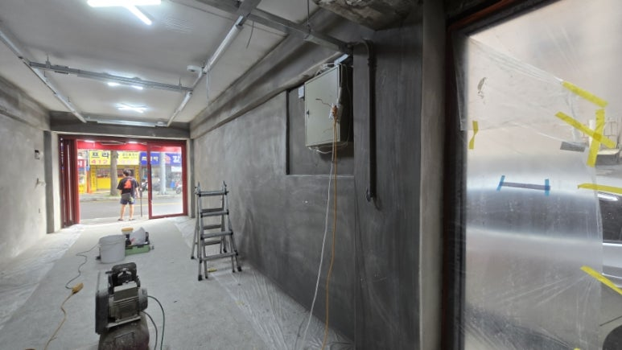
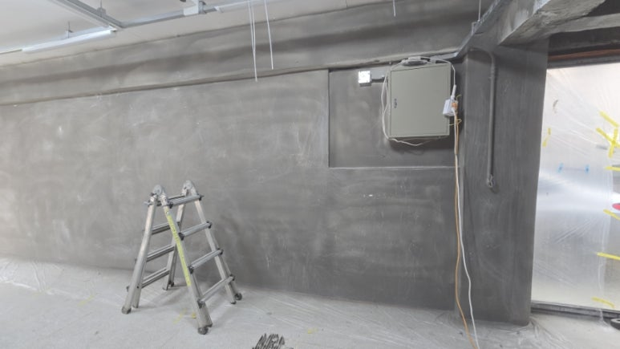
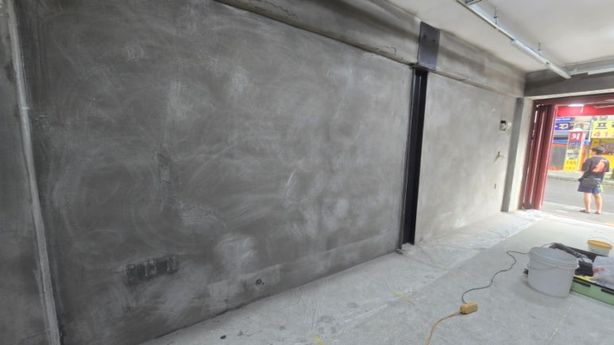
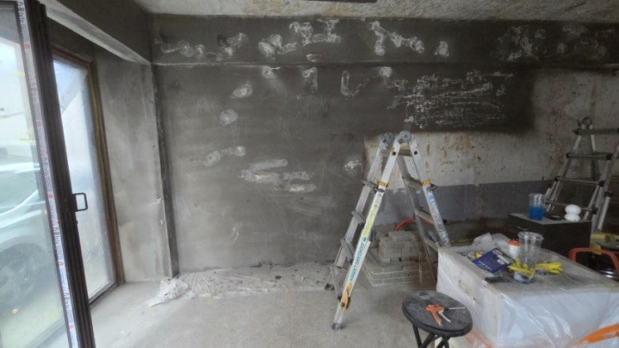
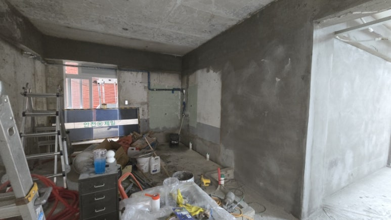
AFTER시공 후
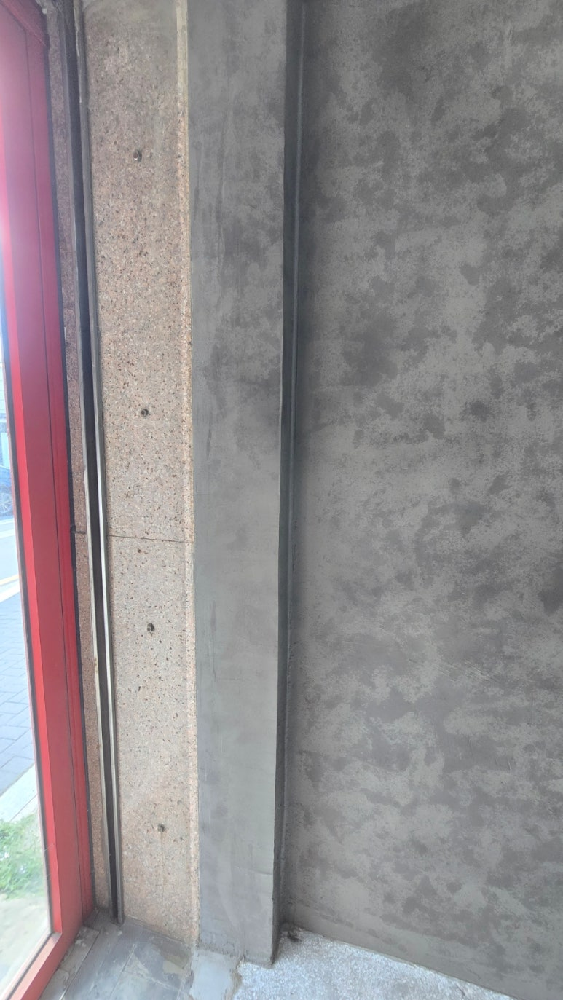
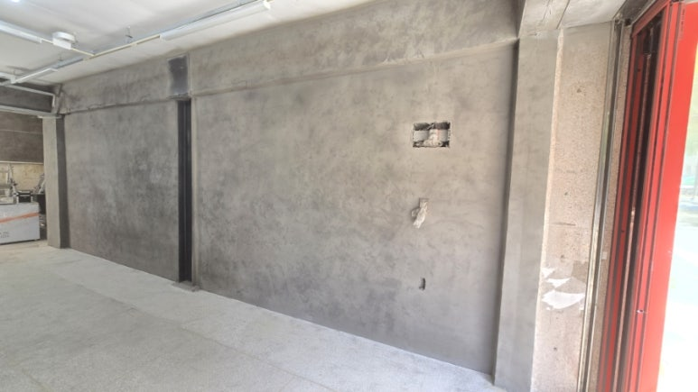
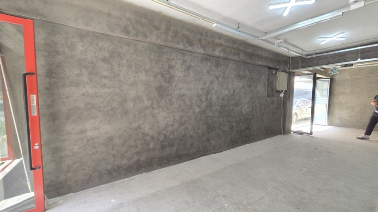
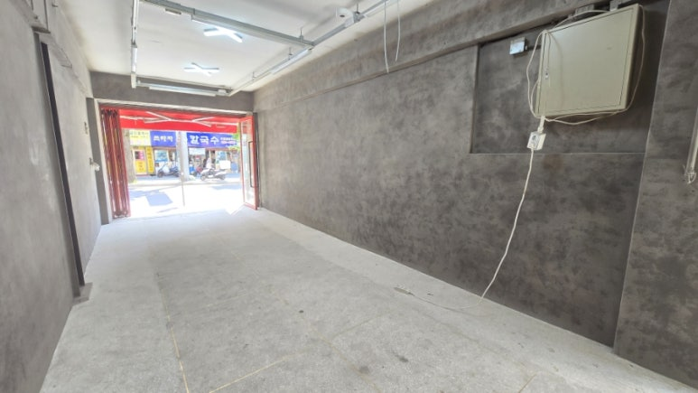
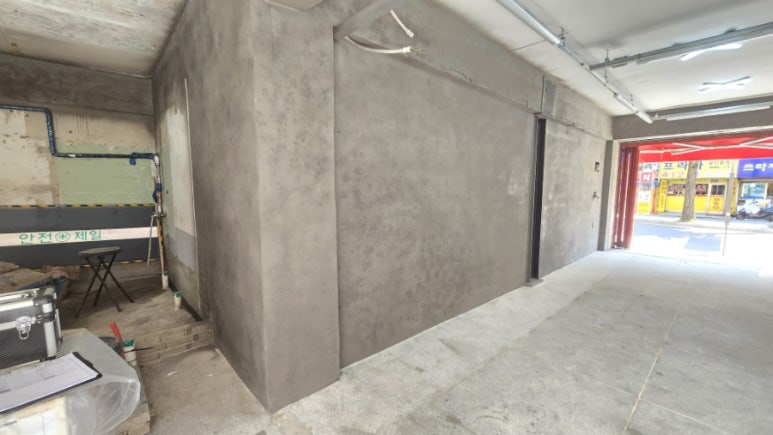
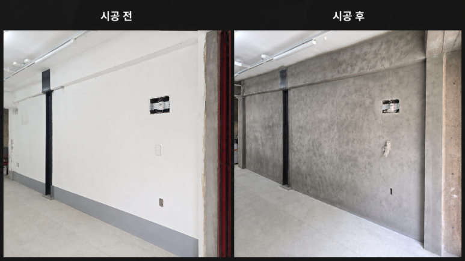
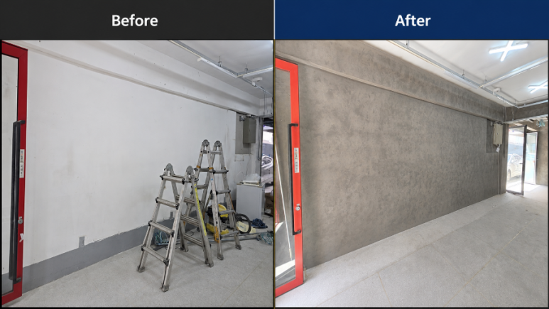
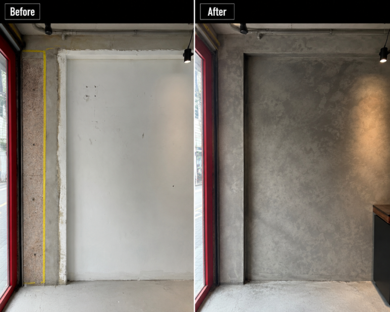
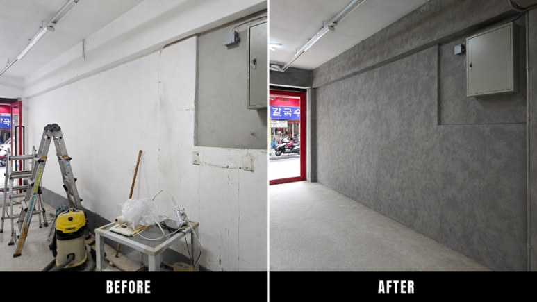